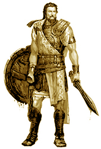
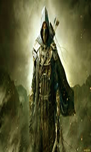

Those are all tasks/quests in the towns billboard:
1. The mayor needs help.
Description:The mayor needs to clean his cellar from some really big rats .
There will be a reward.
(You)Fighter Asgur of the Drake Clan has accepted to go to the mayors house.

2. Lord Tyron has problems in his village.
Description:Lord Tyron of the village Kelesku which is near to our town
have received multiple complains from wives
of fishermen that they haven't returned home.
(You)Fighter Asgur of the Drake Clan has accepted to go to the mayors house.
3. Some bandits have closed the North road.
Description:Some bandits have closed the North Road and they steal anyone who passes.
This must be resolved .
Lord Valerian is in town and he will pass from that road and see what's happening.

4. Rumors say about a hidden artifact in the Caves of Ulmond.
Description:An unknown buyer will pay 2500 gold for this artifact.Leave a note in
towns billboard and he will contact you at local inn.